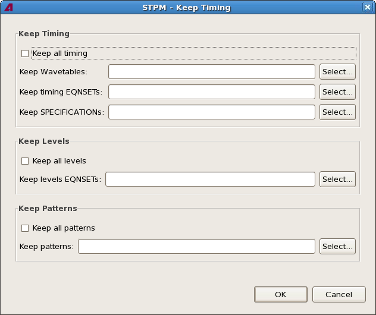

Keep Timing dialog
The Keep Timing dialog lets you specify settings that are always copied when a subflow is extracted or merged, even when they are not used in the subflow.
The dialog is opened by clicking the Additional Content to Keep button in the Extract Subflow dialog (in which case the settings apply to the extraction process) or the Merge Subflow dialog (in which case the settings apply to merging the subflow).

The dialog contains these elements:
- Keep Timing: The timing settings to copy when extracting or merging a subflow, even if they
are unused in the subflow. (By default, only timings used in the subflow are copied.)
- Keep all timing: If this option is checked, all timing settings are
copied, whether they are used in the subflow or not.
This setting corresponds to the 'all' value of the timing_mode parameter of the extract_subflow and merge_subflow commands.
- Keep wavetables: A list of wavetables that are always copied, even
when they are not used by the extracted or merged test groups.
Clicking the Select button lets you specify which wavetables to keep.
This setting corresponds to the keep_wavetables parameter of the extract_subflow and merge_subflow commands.
- Keep timing EQNSETs: A list of timing equation sets that are always
copied, even when they are not used in the subflow.
Clicking the Select button lets you specify which equation sets to keep.
This setting corresponds to the keep_tim_eqnsets parameter of the extract_subflow and merge_subflow commands.
- Keep specifications: A list of specifications that are always
copied, even when they are not used in the subflow.
Clicking the Select button lets you specify which specifications to keep.
This setting corresponds to the keep_specifications parameter of the extract_subflow and merge_subflow commands.
- Keep all timing: If this option is checked, all timing settings are
copied, whether they are used in the subflow or not.
- Keep Levels: The level settings to copy when extracting or merging a subflow, even if they
are unused in the subflow. (By default, only level settings used in the subflow are copied.)
- Keep all levels: If this option is checked, all level settings are
copied, whether they are used in the subflow or not.
This setting corresponds to the 'all' value of the levels_mode parameter of the extract_subflow and merge_subflow commands.
- Keep level EQNSETs: A list of level equation sets that are always
copied, even when they are not used in the subflow.
Clicking the Select button lets you specify which equation sets to keep.
This setting corresponds to the keep_lev_eqnsets parameter of the extract_subflow and merge_subflow commands.
- Keep all levels: If this option is checked, all level settings are
copied, whether they are used in the subflow or not.
- Keep Patterns: The patterns to copy when extracting or merging a subflow, even if they are
unused in the subflow. (By default, only patterns used in the subflow are copied.)
- Keep all patterns: If this option is checked, all patterns are
copied, whether they are used in the subflow or not.
This setting corresponds to the 'all' value of the pattern_mode parameter of the extract_subflow and merge_subflow commands.
- Keep level EQNSETs: A list of level equation sets that are always
copied, even when they are not used in the subflow.
Clicking the Select button lets you specify which equation sets to keep.
This setting corresponds to the keep_lev_eqnsets parameter of the extract_subflow and merge_subflow commands.
- Keep all patterns: If this option is checked, all patterns are
copied, whether they are used in the subflow or not.
Functional changes
- Introduced in SmarTest 7.2.2